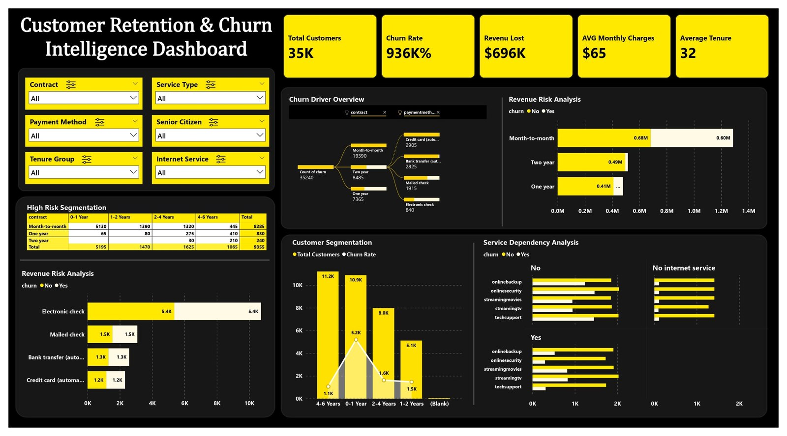

Interactive Power BI Dashboard
View GitHub Repository
Churn driver decomposition, high-risk segmentation by contract and tenure, revenue at risk, customer segmentation and service dependency, with slicers for contract, service type, payment method, senior citizen, tenure group and internet service.
The base has 35K customers, an average monthly charge of $65 and an average tenure of 32. Churn has cost about $696K in revenue.
9,355 customers have churned, roughly 26.5% of the base (calculated from the segmentation table and total customers).
Month-to-month contracts make up 55% of customers (19,390), followed by two-year (8,485) and one-year (7,365) contracts.
8,285 of the 9,355 churned customers (about 89%) were on month-to-month contracts, and they account for about 0.60M of the revenue lost (roughly 86%).
Only about 11% of one-year and 3% of two-year customers churned, compared with about 43% of month-to-month customers.
5,195 churned customers (55%) left within their first year. Churn is about 48% for customers with 0-1 years of tenure, but only about 10% at 4-6 years.
Month-to-month customers in their first year (5,130) are the single largest churn group, about 55% of all churn.
The biggest groups are 4-6 years (11.2K) and 0-1 year (10.9K), followed by 2-4 years (8.0K) and 1-2 years (5.1K).
Offer discounts or perks to convert month-to-month customers to one- or two-year plans.
Add onboarding, welcome offers and check-ins in the first 12 months, when most churn happens.
Use the high-risk segmentation to run retention offers on new month-to-month customers before they leave.
Churn drops sharply after two years of tenure, so loyalty rewards can help push customers across that mark.